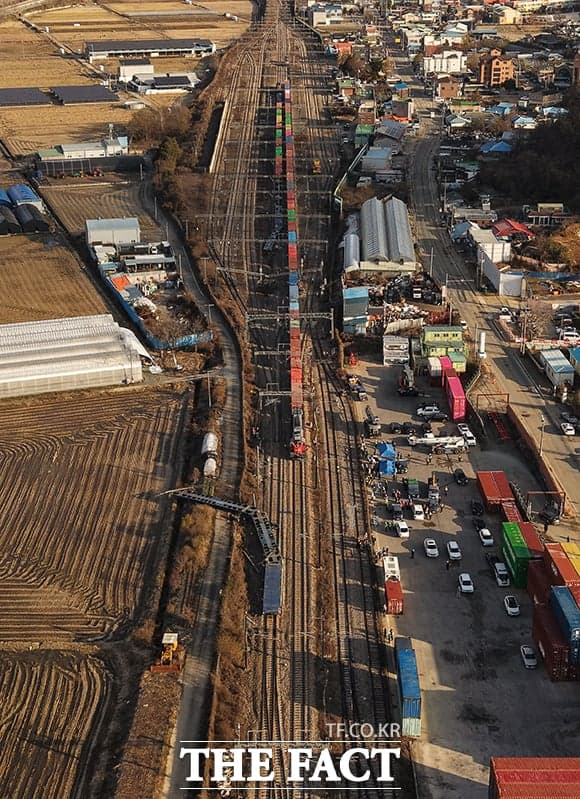
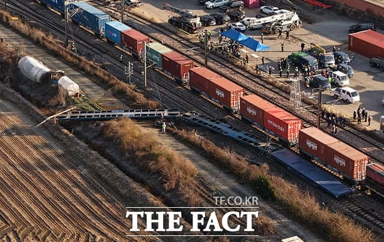


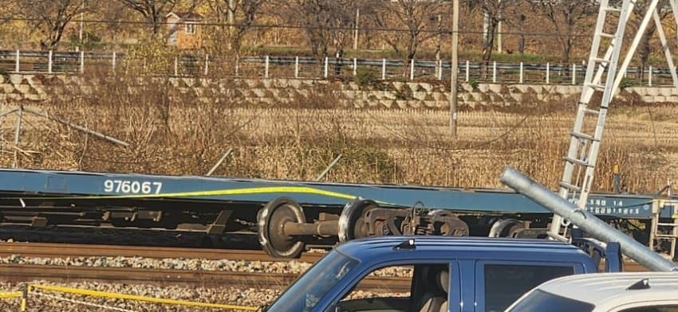

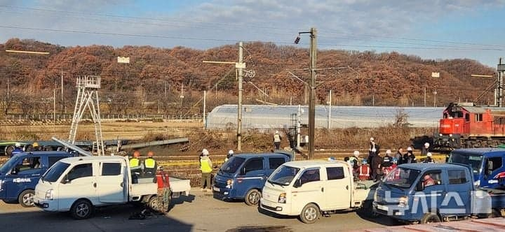

- 진짜 대전, 세종이나 천안 빨리 가야하는 사람들은 이거타삼
시내버스 전국여행 정규루트 GOAT
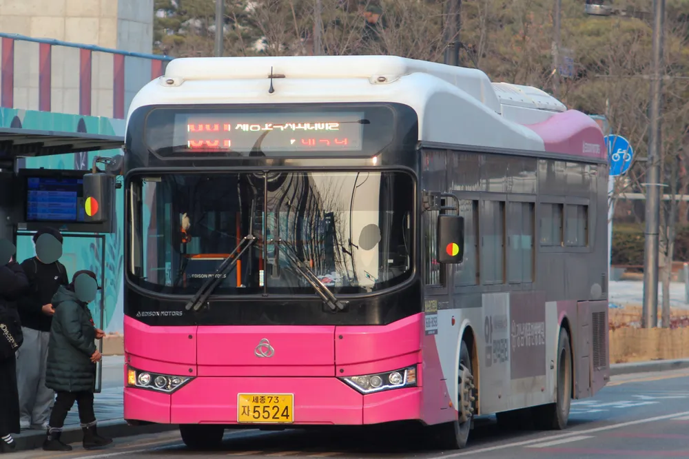
세종버스 991 & 천안 700, 701, 702
기사님들 잘밟아서 나름 시외보다 빠를 수 있음
대전역에서 시내버스로 천안가는법:
B1으로 세종 이동 -> 991로 환승 -> 소정리역 대충 아무곳에서나 700, 701로 환승 -> 천안 도착
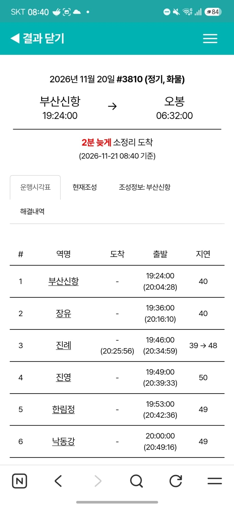
- 경부선 천안~소정리역 구간 전기공급 장애(화물열차 탈선사고)
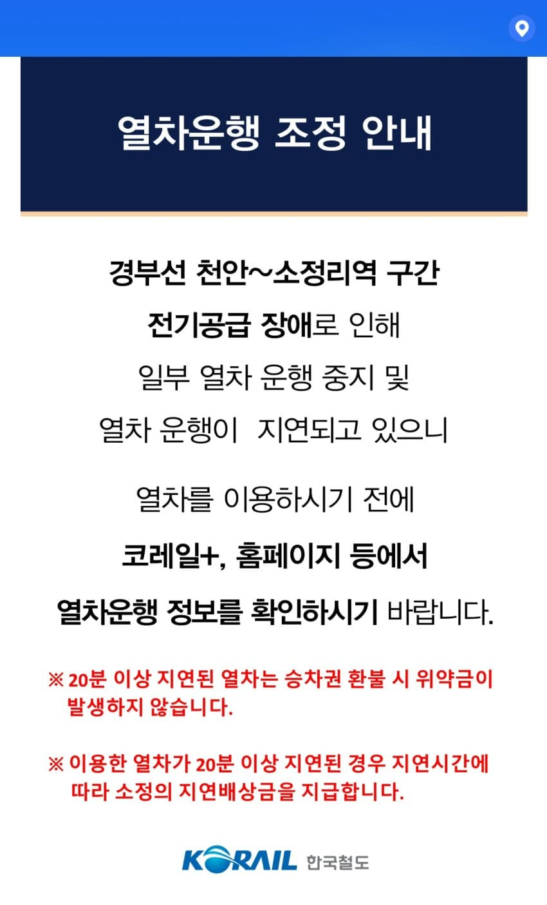
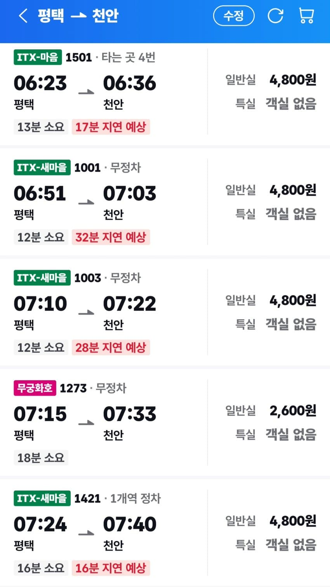
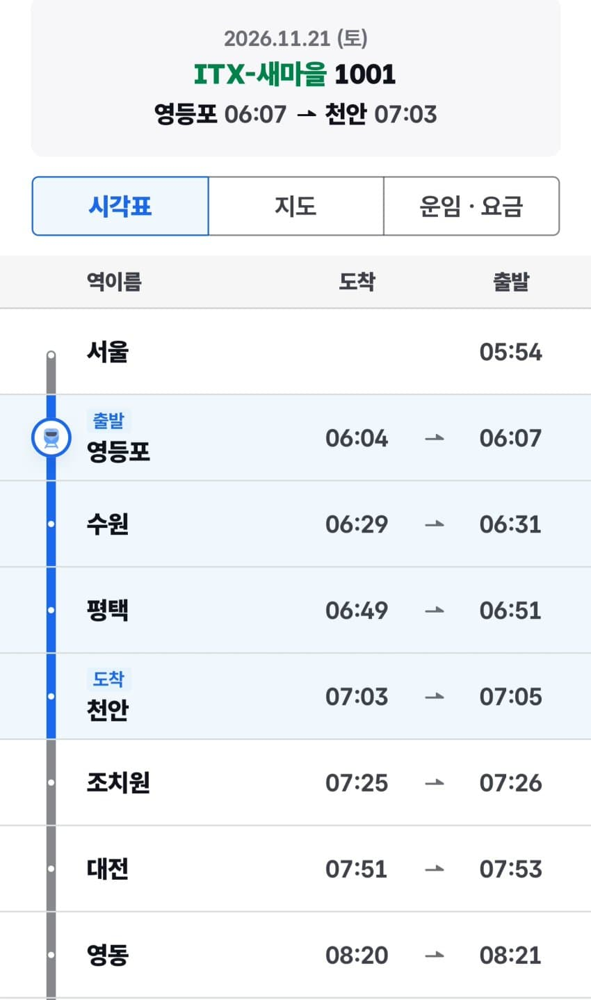
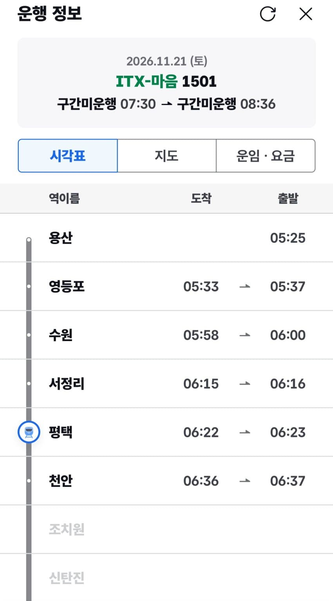
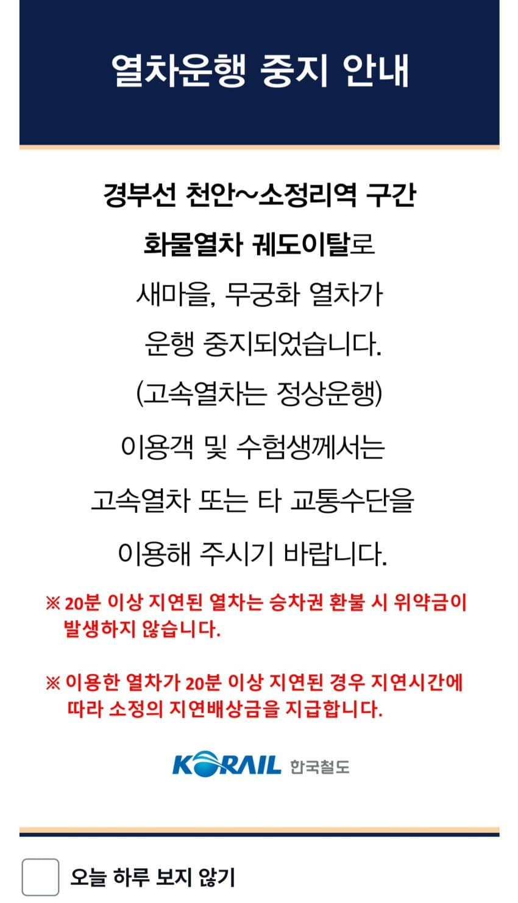
- '탈선 사고' 수험생들 발동동…경부선 일부 구간서 '운행 중단'
이코노미스트 - '탈선 사고' 수험생들 발동동…경부선 일부 구간서 '운행 중단'
'탈선 사고' 수험생들 발동동…경부선 일부 구간서 '운행 중단'
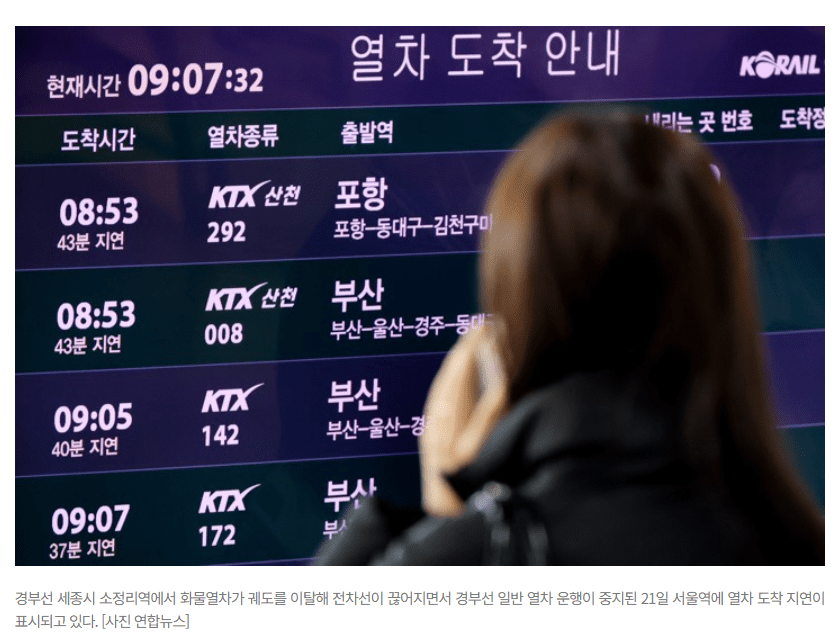
주말인 21일 이른 아침 경부선 소정리역에서 화물열차가 궤도를 이탈하면서 전차선이 끊어져
경부선 천안∼대전 구간 일반열차 운행이 전면 중단됐다.
논술고사를 치르는 대학가로 향하는 수험생과 주말 이용객들의 교통 불편이 우려된다.
한국철도공사(코레일)에 따르면 이날 오전 5시 37분께 세종시 소정면 경부선 소정리역 구내로 진입하던
제3810호 화물열차가 자동 비상제동 체결 이후 선로를 벗어나는 사고가 발생했다.
이 사고로 전체 화물열차 21량 가운데 앞부분 2량과 뒷부분 3량 등 총 5량이 탈선해 소정리역에 정차했다.
열차가 궤도를 이탈하는 과정에서 선로 옆 전차선을 지탱하던 철제 빔을 들이받아 부러뜨렸으며,
이로 인해 전차선이 파손되면서 천안∼전의 구간의 전력 공급이 끊겼다(단전).
화물열차 단독 사고여서 현재까지 확인된 인명 피해는 없는 것으로 파악됐다.
단전과 선로 지장 여파로 경부선을 오가는 ITX-마음, 새마을호, 무궁화호 등 일반열차 운행은 연쇄 지연 끝에 전면 중지됐다.
하행선 여객 첫차인 ITX-마음 1501호 열차는 오전 6시 23분께 경기 평택역에 정차한 채 관제 지시에 따라 대기 중이며,
장항선으로 향하는 후속 1271호 열차는 부본선을 활용해 오전 6시 30분께 우회 출발했다.
코레일은 오전 7시를 기해 경부선 천안∼대전 구간 일반열차 운행을 모두 중단한 상태다.
다만 별도 고속선을 이용하는 KTX 열차와 사고 구간을 지나지 않는 충북선 열차는
이번 사고의 영향을 받지 않고 정상 운행되고 있다.
특히 이날 건국대, 고려대(자연계), 서강대(자연계), 성균관대(언어형), 숭실대, 한국항공대 등
주요 대학의 논술고사가 일제히 실시되면서 상경길에 오른 수험생들의 이동 차질이 우려되고 있다.
코레일은 오전 7시 24분 발송한 재난안전문자를 통해
"경부선 천안∼소정리역 구간 전차선 고장으로 새마을·무궁화 등 일반열차 운행이 중지됐다"며
"이용객과 수험생들은 고속열차나 다른 대체 교통수단을 이용해 달라"고 당부했다.
현재 코레일은 초기대응팀과 기중기 등 복구 장비·인력을 현장에 급파해 긴급 복구 작업을 벌이는 한편
정확한 사고 경위를 조사하고 있다.
댓글
수집 당시 댓글 30개
Local · 11.21 10:13:20
비밀이 · 11.21 10:29:25
楚覇王 項羽 · 11.21 11:10:17
· かなたん · 11.21 11:14:10
· ㅇㅇ · 11.21 11:14:26
· 楚覇王 項羽 · 11.21 11:14:46
· 楚覇王 項羽 · 11.21 11:15:09
봇치쟝 · 11.21 11:11:07
푸루린 · 11.21 11:11:43
· 푸루린 · 11.21 11:12:13
· ㅇㅇ · 11.21 11:14:56
· ㅇㅇ · 11.21 11:21:34
ㅇㅇ · 11.21 11:13:08
かなたん · 11.21 11:13:45
ㅇㅇ · 11.21 11:19:17
ㅇㅇ · 11.21 11:20:07
· ㅇㅇ · 11.21 11:24:51
ㅇㅇ · 11.21 11:24:16
· ㅇㅇ · 11.21 11:25:16
ㅇㅇ · 11.21 11:25:55
· ㅇㅇ · 11.21 11:37:48
msnr · 11.21 11:33:08
ㅇㅇ · 11.21 11:33:27
ㅇㅇ · 11.21 11:37:31
· ㅇㅇ · 11.21 11:38:23
ㅇ · 11.21 11:49:52
멋진남자 · 11.21 11:51:55
· ㅇㅇ · 11.21 11:54:02
ㅇㅇ · 11.21 11:52:23
ㅇㅇ · 11.21 11:55:27